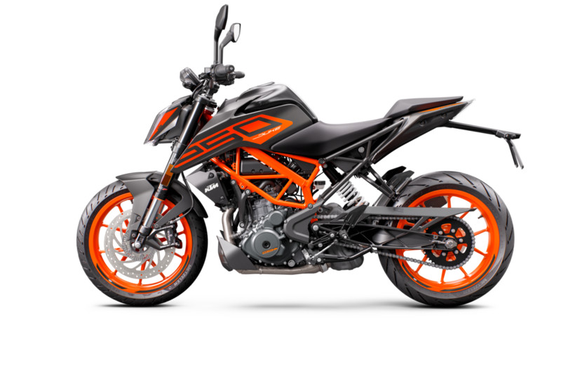
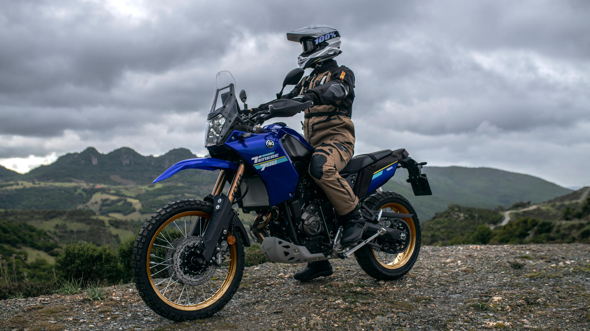
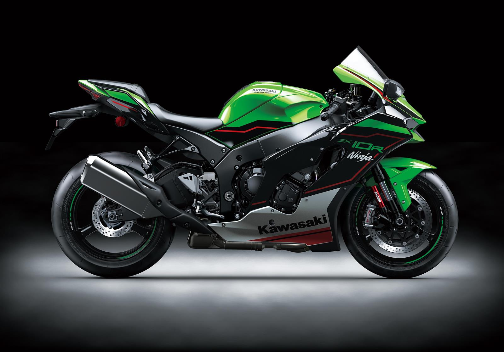

- Ktm 250 DUKE 
- Yamaha TENERE 700 
- Kawasaki ZX10r 
250 DUKE, güçlü 250 cc motoruyla dikkat çekiyor. Büyük kardeşleriyle aynı NAKED konseptine sadık kalarak tasarlanan bu makine, yeni şasi, süspansiyon paketi, LED farlar, sürüş teknolojisi ve döner özelliklerle donatılarak sokaklarda yeni bir çığır açıyor. Sürükleyici saldırganlığıyla öne çıkan bu motosiklet, NAKED kategorisinde benzersiz bir performans sunuyor
Güç ve kontrolün ideal dengesini sunan optimize edilmiş özel şanzımana sahip, yüksek torklu 690 cc 2 silindirli EU5 uyumlu motorla bu ralli tipi uzun mesafe Adventure motosikleti, toprak yol veya asfaltta çok çeşitli sürüş koşullarının üstesinden gelmek üzere üretilmiştir.
Hız yapmak için üretildi...